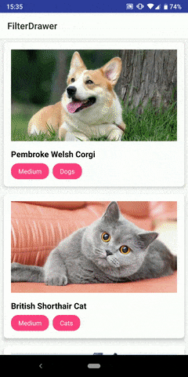

The sample app is under app directory

We will use the implementation in the sample project as examples.
To include FilterDrawer in your project, add the following dependency to your app's build.gradle:
implementation "com.camerash:filterdrawer:1.0.0"
Create classes that extends DefaultParnetItem and DefaultChildItem.
These are the classes used to control and configure items in the FilterDrawer.
ParentItem serves as the controller for the categories you see in the Filter Drawer.
The default behaviour has already been implemented for you in the class DefaultParentItem
You need to implement the following required abstract methods when extending the class:
// Required methods
override fun getParentIcon(): Int
override fun getParentTitle(): String
override fun getChildCollection(): List<ChildItem>
override fun allowSelectMultiple(): Boolean
// Optional modifiers
override fun getLayoutRes(): Int
override fun getRootLinearLayoutId(): Int
override fun getToggleExpandOnClickViewId(): Int
override fun getViewHolder(v: View): ViewHolder
override fun getDefaultTextColorRes(): Int
override fun getSelectedTextColorRes(): Int
override fun getDefaultIconColorRes(): Int
override fun getSelectedIconColorRes(): Int
The parent class in our pet sample app, namely PetFilterCategory, has the following implementation:
class PetFilterCategory(val type: FilterType, @DrawableRes val icon: Int, private val childList: List<PetFilter>): DefaultParentItem() {
enum class FilterType { Kind, Size }
override fun getParentIcon(): Int = this.icon
override fun getParentTitle(): String = this.type.name
override fun getChildCollection(): List<ChildItem> = this.childList
override fun getSelectedTextColorRes(): Int = R.color.colorPrimary
override fun allowSelectMultiple(): Boolean = true
}
In the above example, the type, icon and the category's child filters in childList
are initialized in the class's constructor.
Note that the method getChildCollection() requires a List of ChildItem.
Here we have also defined our own class that extends ChildItem , called PetFilter, which
will be explained below.
ChildItem serves as the controller for the filters you see under every categories in the Filter
Drawer.
The default behaviour has already been implemented for you in the class DefaultChildItem
You need to implement the following required abstract methods when extending the class:
// Required methods
override fun getTitle(): String
override fun getSelectedColorRes(): Int
// Optional modifiers
override fun getLayoutRes(): Int
override fun getViewHolder(v: View): ViewHolder
override fun getDefaultTextColorRes(): Int
override fun getSelectedTextColorRes(): Int
override fun getDefaultBackgroundColorRes(): Int
override fun getSelectedBackgroundColorRes(): Int
The child class in our pet sample app, namely PetFilter, has the following implementation:
class PetFilter(val filter: Enum<*>) : DefaultChildItem() {
enum class Kind { Cats, Dogs, Rabbits, Hamsters, Birds }
enum class Size { Small, Medium, Large }
override fun getTitle(): String = this.filter.name
override fun getSelectedTextColorRes(): Int = R.color.colorPrimary
}
As we have two types of filters, Kind and Size, we defined the suitable enum classes and
instantiatePetFilter with an Enum called filter, which serves as the
filter's identification.
After finishing the above parent and child classes, we can build the filter using DrawerBuilder.
DrawerBuilder requires two types to instantiate, which each extends ParentItem and ChildItem
respectively.
For our example, we first construct our filter list:
private fun constructFilterItems(): ArrayList<PetFilterCategory> {
val pet = PetFilterCategory(PetFilterCategory.FilterType.Kind, R.drawable.round_pets_24, PetFilter.Kind.values().map { PetFilter(it) })
val animal = PetFilterCategory(PetFilterCategory.FilterType.Size, R.drawable.round_size_24, PetFilter.Size.values().map { PetFilter(it) })
return arrayListOf(pet, animal)
}
Then construct our FilterDrawer in the onCreate method of your activity:
val filterDrawer = DrawerBuilder<PetFilterCategory, PetFilter>(this)
.displayToolbar(true)
.withItems(constructFilterItems())
.build()
This builds our FilterDrawer and automatically adds it to the activity.
Up to this point, you should be able to run your app and check out the FilterDrawer by swiping from
the right of the screen.
Our filter is ready, but there are yet to have things to be filtered.
Let's create a class named Pet. To utilize the built-in FilterableRecyclerAdapter
later on, we need to implement the DiffItemCallback<T> interface as follows:
class Pet(val name: String, val imageUrl: String, val kind: PetFilter.Kind, val size: PetFilter.Size) : DiffItemCallback<Pet> {
override fun isIdentical(item: Pet): Boolean {
return name == item.name
}
override fun hasSameRepresentation(item: Pet): Boolean {
return imageUrl == item.imageUrl
}
}
isIdentical provides information on whether the two items are identical at a data level. You
should compare IDs or item-specific variables here.
hasSameRepresentation provides information on whether the two items looks the same when
shown to users. You should compare resources shown to users here.
The built-in adapter compare items by using the platform-providedDiffUtil.Callback(), where our isIdentical
interface is called in its areItemsTheSame method, and hasSameRepresentation is called in
its areContentsTheSame method.
For more informations, check out the library's source code, or the official documentation on DiffUtil.
Next, let's create our adapter by extending the built-in FilterableRecyclerAdapter. The adapter
looks more or less the same with a typical recycler adapter, with the exception of the method filter
which you will need to implement.
In out example, the implementation of method filter would look like this:
override fun filter(data: Pet, parent: PetFilterCategory, child: PetFilter): Boolean {
return child.filter == when (parent.type) {
PetFilterCategory.FilterType.Kind -> data.kind
PetFilterCategory.FilterType.Size -> data.size
}
}
filter will get called whenever the filters in FilterDrawer is updated. In the code
above, it returns whether the given Pet matches the given PetFilter under certain PetFilterCategory.
All nested checkings are done under the hood, so all we need to worry about is whether the given Pet
matches the single given PetFilter.
Finally, setup the your RecyclerView with our adapter, and pass a reference of our FilterDrawer
to the adapter by:
adapter.bindFilterDrawer(filterDrawer)
and you are all set!
Please refer to the KDoc here to familiarize yourself with the base implementations.
Follow the default implementation to extend ParentItem and ChildItem would also be a
good start for your customization.
Feel free to open issues if there are any suggestions or bugs.
Contribution by opening pull requests are also welcomed!
MIT © Camerash